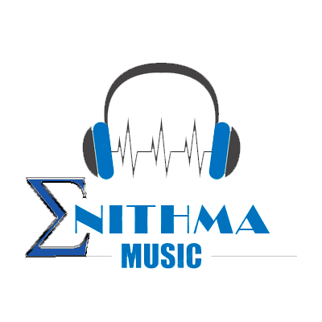

AC/DC es un grupo de rock australiano formado en 1973 en Sídney, Australia, por los hermanos de origen escocés Malcolm y Angus Young.34 Sus álbumes se han vendido en un total estimado de 200 millones de copias, embarcándose en giras multitudinarias por todo el mundo, y sus éxitos han musicalizado varias producciones cinematográficas sobresalientes.78910 Son famosas sus actuaciones en vivo, resultando vibrantes y exultantes espectáculos de primer orden. Mucho de ello se debe al extravagante estilo de su guitarrista principal y símbolo visual, Angus Young, quien asume el rol de agitador musical durante los conciertos, gracias a sus dinámicos y adrenalínicos despliegues escénicos uniformado de colegial callejero. Al comienzo, los circuitos de pubs australianos fueron testigo de los primeros meses de vida del proyecto, tiempos por los cuales sufrieron diversos cambios en su alineación.
Leer mas...Queen es una banda británica de rock formada en 1970 en Londres por el cantante Freddie Mercury, el guitarrista Brian May, el baterista Roger Taylor y el bajista John Deacon. Si bien el grupo ha presentado bajas de dos de sus miembros (Mercury, fallecido en 1991, y Deacon, retirado en 1997), los integrantes restantes, May y Taylor, continúan trabajando bajo el nombre Queen, por lo que la banda aún se considera activa.4 El grupo gozó de un gran éxito en el Reino Unido con álbumes como Sheer Heart Attack (1974) y A Night at the Opera (1975). Este último llamó la atención internacionalmente, en especial por el sencillo "Bohemian Rhapsody", y colocó a Queen en un primer plano de la escena musical. Tuvieron una significativa repercusión en Estados Unidos a finales de los años 1970, ya con un numeroso repertorio de éxitos. A nivel artístico, se ha destacado su diversidad musical, sus arreglos en múltiples capas y sus armonías vocales. Es considerada una banda de gran influencia en el desarrollo del hard rock y el heavy metal, incorporando elementos del glam rock, rock progresivo, folk, blues y pop. Fue una de las primeras agrupaciones musicales en hacer de sus conciertos espectáculos muy vistosos mediante el uso de bombas de humo, flashpots o innovadores sistemas de luces móviles, además de promover la participación del público en los mismos, contribuyendo así al auge del arena rock.
Leer mas...